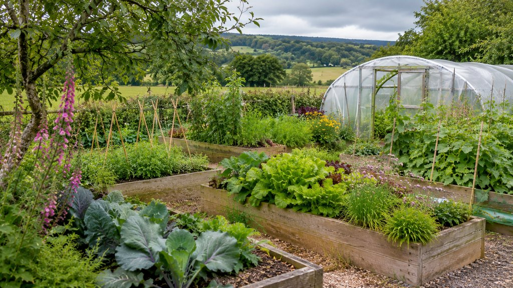
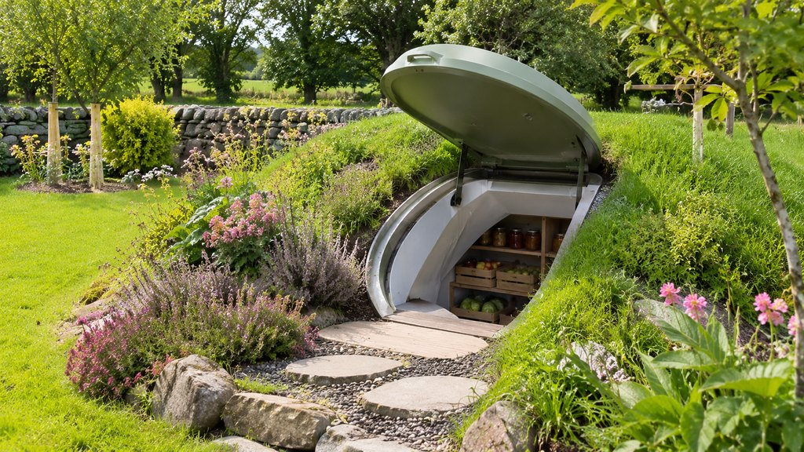
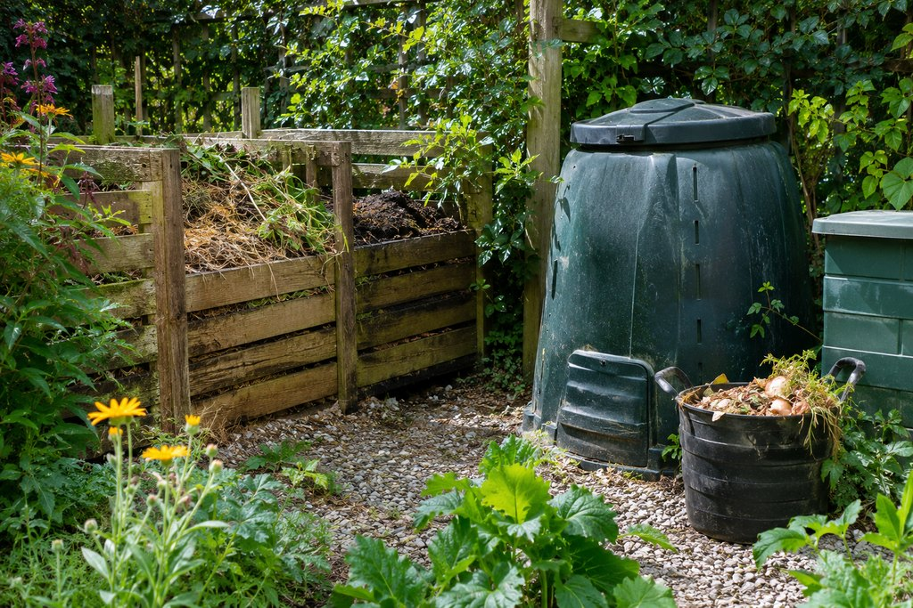
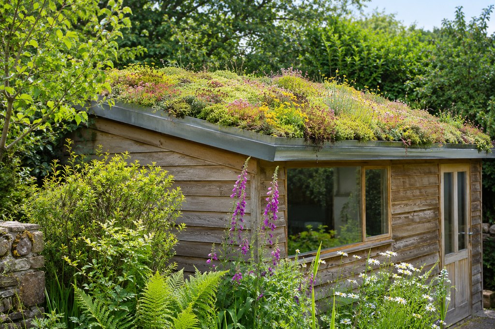

Most gardens are asked to do one thing: look well. They can do far more.
The same ground that holds a lawn can grow salads and fruit, keep potatoes through the winter, turn kitchen scraps into compost and give bees somewhere to feed.
None of this makes a household self-sufficient, and it doesn’t have to. It’s a garden that works a little harder: growing more, wasting less and depending on a little less. Each chapter starts small and builds up, so you can take one idea, or several.
The garden that feeds you
Start with what you’d like to eat.
Salad leaves, herbs, a few rows of potatoes, soft fruit along a fence. A productive garden begins small and grows with you.
Growing food in an Irish garden

Growing in Irish conditions.
Ireland’s problem is rarely cold. It’s wet ground, wind and short winter days. The national average rainfall is about 1,288 mm a year, and December averages only about 44 hours of sunshine.
That’s why raised beds suit so many Irish gardens: they drain, warm up sooner in spring and are easier to reach. Shelter from a hedge or fence helps more than most people expect, and a polytunnel or greenhouse adds weeks at both ends of the season.
-
Start small
Two beds and a herb pot
Two raised beds near the back door for salads, herbs and a few quick crops. Pots and window boxes work where there’s no soil at all.
A weekend to build; a little watering and weeding each week in season.
-
Step up
Fruit, beds and cover
Add fruit bushes and apples or pears trained flat on a sunny wall or fence, more beds in rotation, and a polytunnel or greenhouse for an earlier start and a later finish.
Polytunnels and greenhouses share the garden-structure allowance (chapter 06).
-
Go further
An edible edge
A hedge of hazel, fruit and herbs, or a small “forest garden” of layered perennial crops that mostly look after themselves once established.
Slow to mature: the best-known forest garden in these islands took about ten years to establish.
What growers report
Up to about 100 kg a year, rising to about 205 kg.
GIY’s own community survey reports new growers harvesting up to about 100 kg of vegetables a year, and established growers about 205 kg, from plots of around 30 m². These are self-reported figures from keen growers, not a promise for any garden.
No garden of your own, or not enough of it? The Borrowed Garden looks at growing food on part of someone else’s.
The underground pantry
A cool, dark room under the grass.
Before fridges, the ground kept the harvest. A short way down, soil holds a steady, cool temperature through the year. An underground store puts that to work.
Underground food storage

An old idea, with an Irish past.
Ireland already has a version: the potato clamp, a heap of potatoes laid between straw and soil to keep out frost and light. Its weakness was always rats. In Sweden, the earth cellar, or jordkällare, is still built today, typically with around 50–60 cm of earth over it, two chambers and drainage all round.
A modern underground store works the same way. The earth over it keeps the inside close to the temperature of the surrounding ground, a vent changes the air, and shelves keep crates apart.
- Earth coverSoil and turf over the top hold the inside near the ground’s own temperature, cool in summer and frost-free in winter.
- The shellBlock or concrete built by a groundworks contractor, or a factory-made shell. It has to resist the weight of earth and keep water out.
- VentilationStored produce gives off moisture and gases. A vent, sometimes with a small fan, keeps the air fresh and the damp down.
- Shelves and cratesAir around each crate, apples apart from potatoes, and nothing stacked so deep that a bad one goes unnoticed.
- Steps and a doorA well-fitting door keeps light and rodents out. Steps need to be safe in the wet and the dark.
- DrainageWater is the real enemy in Ireland, not cold. Gravel and a drain under and around the store carry it away.
-
Start small
A clamp or a cool store
A straw-and-soil clamp in the garden, or crates in an unheated, dark shed or outhouse. Little or no cost, and a good way to learn what keeps.
Rodent-proofing matters most here.
-
Step up
An insulated garden store
A small, shaded, insulated and ventilated store above ground. Simpler to build than a cellar, though it follows the weather more than the ground does.
A garden structure, sharing the allowance (chapter 06).
-
Go further
A buried cellar
A block-built cellar under an earth mound, or a factory-made underground store set in by excavator. The most stable conditions, and the biggest project.
Needs a site check, a contractor and a planning view first (below).
The Groundfridge.
Made in the Netherlands, the Groundfridge is a factory-made underground store with a fibreglass-reinforced shell, set into the ground and covered with excavated soil. Its maker says the inside tracks the soil at about one metre down, typically 8–15 °C in its Dutch installations, without mains power.
- Size
- About 7.8 m³ in total; the shell weighs about 560 kg
- Advertised price
- US$21,995 for the fitted version (shelves, railing, solar-powered ventilation) and US$18,995 empty, as listed on its webshop
- Not included
- Delivery, excavation and installation, which the buyer arranges with a contractor
- Delivery
- By trailer from the factory within Europe. Ireland and the UK are not listed among its delivery regions
- Not stated
- Warranty terms, lead times and the cost of delivery to Ireland aren’t given on its website; ask before ordering
- Permits
- The maker says permits are “probably not required” and advises checking with the local council. That reflects its home market, not Irish rules
Shown as an example of what exists, not a recommendation. Irish delivery is not confirmed, and the Groundfridge is not a PlotNua partner. Advertised prices in US dollars, checked on its website on 8 November 2026; exchange rates, taxes and transport vary.
Before you dig
An underground store is the most ambitious idea on this page. These are the checks that decide whether it suits your garden.
- PlanningGarden “stores” can be exempt from planning permission (chapter 06), but no rule or decision we found deals with a buried one. Ask your council for a Section 5 declaration (€80) before you commit.
- Groundwater and floodingCheck Geological Survey Ireland’s groundwater-flooding maps and dig a trial pit in winter. A high water table can rule a cellar out.
- AccessExcavation usually needs a mini-digger and somewhere to put the spoil. Make sure there’s a way in from the road.
- ElectricsA fan or a light needs outdoor-rated wiring, and in Ireland only a Registered Electrical Contractor may do and certify that work.
- RadonRadon, a natural gas from the ground, occurs in every county. A food store isn’t a room to spend time in: ventilate it and keep visits short.
- PestsRodent-proof doors, vents and drains. It’s the weakness every underground store shares with the old clamp.
The basics of storing the harvest
safefood and Stop Food Waste give the essentials: potatoes cool, dark and dry, away from heat; onions kept apart from potatoes; carrots and other root vegetables don’t need chilling; and unwashed produce kept separate from food that’s ready to eat. Irish growers describe the conditions potatoes like as dark, around 5–10 °C, with a little ventilation.
Check stored food every week or so and take out anything that’s turning. How long anything keeps depends on the crop, the variety and the store; no store makes food safe that wasn’t sound to begin with.
Waste into something wonderful
Peelings in, rich soil out.
Kitchen scraps and garden clippings are half of good soil. Composting keeps them in the garden and puts them back where they’re needed.
Composting at home in Ireland

- 1 Jan 2024Since then, every Irish household must keep food waste separate
- HomeComposting at home is a recognised alternative to the brown bin
- 43 kgHousehold food waste per person in 2022, by the EPA’s estimate
- 40–60 °CThe working heat of an insulated hot composter, per one maker’s specification
-
Start small
A bin or a wormery
A simple compost bin for peelings, tea leaves and clippings. A wormery uses composting worms to turn kitchen scraps into rich compost and liquid feed, and fits a small yard or shed.
Uncooked fruit and vegetable scraps only, in a standard bin.
-
Step up
A hot composter
An insulated bin that keeps the heap working through winter and, because it runs hot, can take cooked food as well. One well-known 200-litre model needs at least 5 kg of waste a week to stay hot.
Sold in Ireland; one Irish retailer listed it at €329.50, on offer at €289.50, when checked on 8 November 2026.
-
Go further
Three bays
Timber bays for garden waste: one filling, one rotting down, one ready to use. Turning a bay into the next speeds it up and makes the best compost.
Needs space, and a fork and some effort every few weeks.
Keeping a heap healthy.
Balance soft, wet “greens” (peelings, grass) with dry “browns” (cardboard, leaves, twigs). Too wet and it smells; too dry and it stalls. A cold heap with cooked food in it attracts rats, which is why cooked scraps belong in a hot composter or the brown bin.
Councils expect home composting not to cause a nuisance to neighbours, so keep it covered, keep it working and keep it away from the boundary where you can.
Giving it back to the garden.
Finished compost is dark, crumbly and smells of earth. Spread it on beds as a mulch in autumn or spring, dig it into new beds, or sieve it for potting. Fallen leaves, gathered in a bag or a wire cage, make leaf mould in a year or two. Nothing leaves the garden, and very little needs to come in.
The greenhouse that stores sunshine
Catch the day’s warmth, keep it for the night.
A greenhouse traps the sun. A well-designed one holds on to its warmth after dark, so the season starts sooner and runs later.
Greenhouses, thermal mass and hotbeds

In Ireland, light matters more than cold.
Irish winters are mild but dull: the national mean temperature is about 9.8 °C, but December averages only about 44 hours of sunshine. So the honest promise of a greenhouse here is frost-free winter salads, earlier spring sowings and a longer autumn, not tropical crops in January.
The idea is simple: let the low sun in, store its warmth in something heavy, and let it out slowly through the night.
In the illustration above, that heavy store is the stone back wall and the row of dark water barrels standing against it. Water holds a great deal of heat for its volume, and dark surfaces absorb the low winter sun, so the barrels act as thermal mass: they warm through the day and give that warmth back after dark. The raised bed under its glazed lid adds a second layer of cover for seedlings.
- Glass to the sunThe glazing faces the sunniest direction, steep enough to catch the low winter sun.
- A solid back wallBrick, block or stone on the shaded side stores heat by day and loses less at night than glass.
- Water barrelsDark containers of water absorb warmth and give it back slowly. How much difference they make depends on the size, the glazing and the night.
- A hotbedFresh manure or leaves under the soil heat it from below as they rot: a Victorian trick for the earliest sowings.
- VentilationEven in winter, a vent lets out excess heat on bright days and the damp that brings disease.
- Climate battery (specialist)A fan pushes warm daytime air through pipes buried under the floor, and draws it back at night.
Established
Proven, widely used and within reach of most gardeners.
Greenhouse or polytunnel
Glass lasts and looks well; a polytunnel gives far more growing space for the money. One Irish supplier’s polytunnels run from about 2.4 to 5.5 metres wide.
A lean-to on a sunny wall
Built against a sunny wall of the house or the garden, a lean-to borrows the wall’s warmth and shelter. Mind the doors, windows and drains it would cover.
Thermal mass
A dark masonry wall, paving or water barrels, placed where the sun reaches them. Cheap, silent and with nothing to maintain.
The hotbed
Guidance describes a bed about 1.8 m square and 60–90 cm deep, letting sowings start around two months early. Fresh manure gives off ammonia, so ventilate well, and ask where bought-in manure came from: some carries weedkiller residues that harm crops.
Specialist
Promising, but designed case by case. No Irish company we found offers them as a service, and results depend on the design, the site and the weather.
The sunlight greenhouse
Developed in northern China: a heavily insulated back wall and sloped glazing that grow winter vegetables with little or no heating. Its lessons scale down to a well-built lean-to, though Irish winters offer much less light.
The climate battery
Fans circulate greenhouse air through pipes buried in the soil, storing heat by day and returning it at night. Plans are sold abroad; the fans need power, wired by a Registered Electrical Contractor.
The pit greenhouse
A greenhouse sunk into the ground so the earth itself holds the warmth. Guidance calls for the floor to sit at least about 1.5 m above the water table, which rules out many wet Irish sites.
Heating with compost
Pipes coiled through a large compost heap can warm water, but at garden scale the heat is modest: one Finnish pilot found it couldn’t meet its greenhouse’s needs. A hotbed is the practical version.
An Irish example: the Sun Harness Garden at Bord Bia Bloom 2024 showed structures designed to make the most of the sun in an Irish garden.
The living roof and wild garden
A roof that flowers, a garden that hums.
Every shed, store and garden room has a roof. Planted, it slows the rain, feeds pollinators and turns a plain building into part of the garden.
Living roofs and wildlife-friendly gardens

How a living roof works.
A living roof is a thin layer of growing medium and low plants, usually sedum, sometimes with wildflowers, laid over a waterproof, root-resistant membrane and a drainage layer. The plants are often grown on a mat or in trays and arrive ready to lay.
They hold back rain. A four-year University of Sheffield study found shallow living roofs retained over 80% of the rain in light showers, though much less in heavy storms. Sedum roofs have grown in Irish conditions for years, including a large roof near Blarney laid in 2006.
- €90–120per m² for a basic sedum roof installed in Ireland, indicative 2025 guide
- €120–160per m² for a biodiversity mix, including waterproofing and drainage
- 60–150 kgper m², roughly, for a shallow system when wet: many sheds need strengthening
- 3 m / 4 mThe height limits for an exempt garden structure still apply, roof included
Check first
A wet living roof is heavy. Have the building’s structure checked before anything is ordered, and don’t put one on a roof that wasn’t designed for it.
- StructureRafters, walls and footings must carry the saturated weight. New garden buildings can be designed for it from the start.
- WaterproofingA root-resistant membrane under everything; most problems start with a leak, not the plants.
- Drainage and edgesOutlets kept clear and a gravel strip at the edges, so water leaves the roof and plants stay put.
- UpkeepAn inspection or two a year: clear the outlets, pull out tree seedlings, patch bare spots. A sedum roof wants little else.
The wild garden.
Almost a third of Ireland’s bee species are threatened with extinction. The All-Ireland Pollinator Plan publishes simple, low-cost actions for gardens, and several of them involve doing less: mowing less and lifting the clippings so wildflowers can come up, leaving some areas to grow wild, planting for flowers from spring to autumn, and not using pesticides.
Add places to live: a patch of scraped-back bare earth for mining bees, a log pile, a hedge rather than a fence, a shallow dish or a small pond for water. A living roof on the shed is a meadow nobody walks on.
Keeping honeybees is a bigger step: beekeepers in Ireland register with the Department of Agriculture, Food and the Marine, and joining a local beekeeping association first is the usual advice.
Want to store the rain as well as slow it? The Water Wall looks at rainwater storage in the garden.
Make it happen
Where to start, and what it takes.
Most of this needs no builder and no permission. The bigger structures share one planning allowance, so plan them together.
One allowance, shared.
Greenhouses, polytunnels, sheds, stores and similar structures in the garden can be exempt from planning permission, but they share a single allowance. Plan the whole garden before you build the first one.
Established
What the regulations say, as amended on 27 July 2026. Every limit applies together, and each comes with further conditions.
- Covers tents, awnings, shades, greenhouses, garages, stores, sheds and similar structures.
- The 30 m² is for all such structures together, including any already there.
- Never forward of the front wall of the house.
- At least 25 m² of private open space must remain to the rear or side.
- No higher than 3 metres, or 4 metres with a tiled or slated pitched roof.
- Only for purposes incidental to enjoying the house: not for living in, and not for keeping pigs, poultry, pigeons, ponies or horses.
Shared with: a shed, a garden room or a garage built under the same class.
- Any homeowner can ask the council whether a particular proposal is exempt.
- The council is due to decide within four weeks, unless it asks for more information.
- Its decision can be referred on appeal.
- Worth doing for anything unusual, such as a buried store, before you commit.
- Exemptions can be lost for a protected structure, in an Architectural Conservation Area, or where a planning condition rules them out.
PlotNua’s summary is general information, not legal advice.
An illustration of how the allowance adds up, not a design for any particular garden. Compost bins, raised beds and planting aren’t structures and don’t count.
What things cost.
Examples PlotNua found in published prices and guides, not quotes. Real costs depend on size, specification, site and who does the work.
| Idea | Indicative cost | What the figure is |
|---|---|---|
| Hot composter | €290–330 | One 200-litre model, as listed by an Irish retailer: €329.50, on offer at €289.50 |
| Polycarbonate greenhouse | about €1,220 | A 3 × 8 m polycarbonate greenhouse on a galvanised steel frame, as listed by an Irish retailer, plus €49.99 delivery, before any base or assembly; VAT treatment not stated. Glass greenhouses cost more |
| Living roof | €90–160 / m² | Installed, from basic sedum to a biodiversity mix, including waterproofing and drainage; an Irish 2025 guide |
| Factory-made underground store | US$18,995–21,995 | The Groundfridge, as listed on its webshop, before transport, excavation and installation; no confirmed Irish route |
| Section 5 declaration | €80 | The council fee for a formal view on whether a proposal is exempt |
Not as casual as they look
Every poultry keeper in Ireland, even with two hens, must register with the Department of Agriculture, Food and the Marine, and housing orders can apply when bird flu is about. A hen house can’t rely on the garden-structure exemption, which excludes keeping poultry.
Lights, fans and pumps
Any wiring to a greenhouse, store or garden building is controlled work in Ireland: only a Registered Electrical Contractor may do and certify it, and they issue a Completion Certificate.
Check before you build
A buried store needs a groundwater check; a living roof needs a structural one. Both are cheaper before work starts than after.
Two related Discoveries.
Solar power and rainwater storage are covered in depth elsewhere on PlotNua.
The House as a Power Station
Solar panels, batteries and what an Irish home can do with the power it makes.
Explore GardenThe Water Wall
Storing rainwater in a slim garden wall, for the beds and the greenhouse.
ExploreYour next step
Two ways to take the next step.
Explore it yourself
Start with one idea this season, read about the Irish businesses we have researched, and take our questions to anyone you talk to.
Let PlotNua do the homework
Tell us about your garden and what you’d like it to do. We’ll help you work out what fits, in what order, and who could help.
Free for homeowners.
Start your message with the reference RG so we know it’s about The Resourceful Garden. Prefer email? Use our contact page and mention “RG”.
PlotNua doesn’t sell, build or install anything on this page and can’t confirm what your garden allows; that needs a site visit. Nothing is ordered or paid for by sending a message.
Irish businesses that can help.
These businesses supply or install things on this page in Ireland. PlotNua has researched what they publish; they are listed for information only.
Quickcrop
Ballymote, Co. Sligo
Raised beds, polytunnels, composters and seeds, delivered throughout Ireland.
D Plant Horticulture
Enniscorthy, Co. Wexford
Irish-made polytunnels, carrying the Guaranteed Irish mark.
Keans
Claremorris, Co. Mayo
Irish-owned retailer of greenhouses and polytunnels, with published prices and home delivery.
Peppermint Farm Glasshouses
Bantry, West Cork
Greenhouses, lean-tos and conservatories, installed nationwide. It sponsored the Sun Harness Garden at Bloom 2024.
Polydome
Birr, Co. Offaly
Glasshouses and polytunnels, built by its own greenhouse constructors.
Landtech Soils
Ireland
Grows sedum trays and installs green roofs.
Descriptions come from the businesses’ own published pages and press, checked in November 2026. PlotNua has no commercial relationship with any business named on this page, none is a PlotNua partner, and inclusion is not a recommendation. No passive-solar or climate-battery greenhouse specialist was found in Ireland. No photographs from these businesses are shown; every image on this page is an AI-generated illustration.
SourcesWhere this information comes from
- Planning and Development (Exempted Development) Regulations 2026, S.I. No. 338 of 2026: amended Class 3 (30 m²), in force 27 July 2026, as published by South Dublin County Council and Galway City Council.
- Section 5 declarations (€80; a decision due within four weeks; appeals): Kilkenny County Council (2026 Regulations) and Dublin City Council.
- Climate: Met Éireann 1991–2020 averages, as reported by The Irish Times (18 July 2023); sunshine: Teagasc.
- Growing: GIY community survey; forest gardening: Gardens Illustrated.
- Clamps and storage: Fruit Hill Farm; safefood; Stop Food Waste. Earth cellars: Leca jordkällare guide (Swedish).
- Groundfridge: groundfridge.com (delivery, temperature, installation, permits) and its webshop (prices, exclusive of transport and installation), checked 8 November 2026.
- Hazards: Geological Survey Ireland (groundwater flooding, radon); Commission for Regulation of Utilities, Electrical works in your home.
- Food waste: EPA food waste statistics; Galway County Council (food waste duties and home composting). Hot composting: HOTBIN specification; Irish listing on Quickcrop, checked 8 November 2026.
- Greenhouses: GrowVeg (hotbeds); sunlight greenhouses, Chen et al., Journal of the Society of Agricultural Structures, Japan (2000); Ceres Greenhouse Solutions (climate battery); Benson Institute walipini guide; Pardo (2020), compost heat recovery pilot, Theseus; Bord Bia Bloom; Keans (checked 8 November 2026) and Quickcrop published ranges.
- Living roofs: Stovin et al., University of Sheffield; BookMyRoofer.ie (Irish indicative prices and weights, 8 March 2025; rechecked 8 November 2026); Sempergreen Blarney reference.
- Pollinators and bees: All-Ireland Pollinator Plan, How can I help pollinators in my garden?; Federation of Irish Beekeepers’ Associations. Poultry: gov.ie Poultry Register.
- Businesses: Quickcrop, D Plant Horticulture, Keans, Peppermint Farm Glasshouses, Polydome and Landtech Soils, from their own published pages and press.
Last checked 8 November 2026. PlotNua is an independent discovery platform. The planning summary is general information, not legal advice. The garden images on this page are AI-generated illustrations, not photographs of real gardens, products or installations; the drawings are simplified PlotNua illustrations, not to scale.